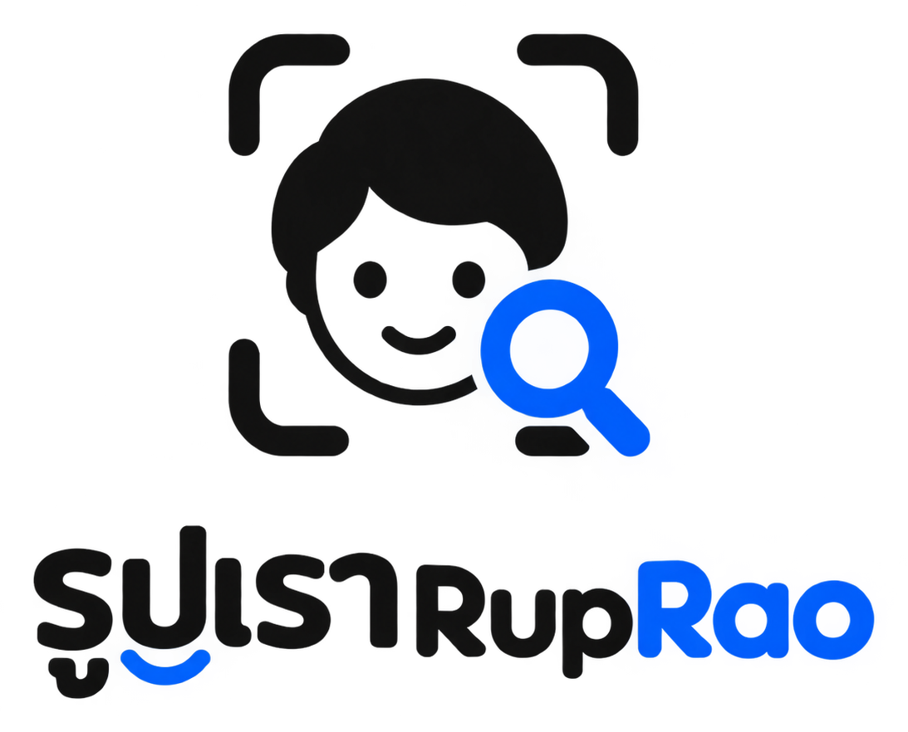
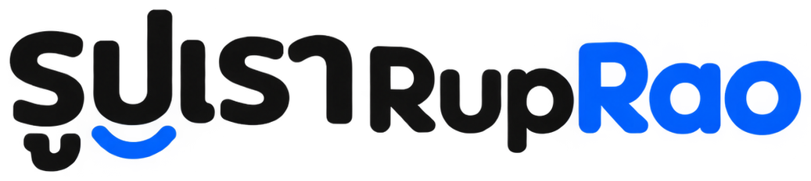
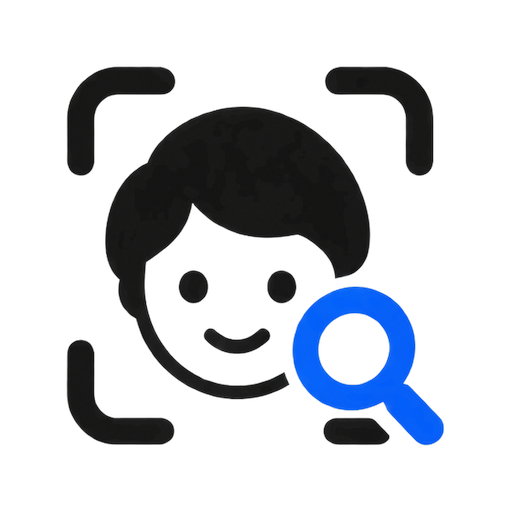
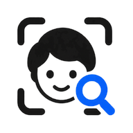

1
กรอบสแกนมุมโค้งการค้นหาด้วยใบหน้า — สื่อฟังก์ชันหลักได้ทันที
2
หน้าคนยิ้มผู้ร่วมงาน “เรา” ทุกคน — อบอุ่น เป็นมิตร ไม่ใช่กล้องจ้องมอง
3
แว่นขยายสีฟ้าค้นหาแล้วเจอ — สีฟ้าคือจุดจำของแบรนด์ ใช้กับ “Rao” และรอยยิ้มใต้ “รูปเรา”
ค้นหารูปของคุณจากใบหน้า — แบรนด์ที่สดใส เป็นมิตร ให้รูปของผู้คนเป็นพระเอก

กรอบสแกนมุมโค้งการค้นหาด้วยใบหน้า — สื่อฟังก์ชันหลักได้ทันที
หน้าคนยิ้มผู้ร่วมงาน “เรา” ทุกคน — อบอุ่น เป็นมิตร ไม่ใช่กล้องจ้องมอง
แว่นขยายสีฟ้าค้นหาแล้วเจอ — สีฟ้าคือจุดจำของแบรนด์ ใช้กับ “Rao” และรอยยิ้มใต้ “รูปเรา”


ขนาดเล็กสุดของสัญลักษณ์ 24px · โลโก้แบบมีชื่อเล็กสุด 120px กว้าง · เว้นพื้นที่รอบโลโก้อย่างน้อยเท่าความยาวมุมกรอบสแกน

48ขาว–ดำเป็นหลัก สีฟ้าใช้เป็นจุดเน้น (ปุ่มสถานะ เส้นสแกน “Rao”) ให้รูปถ่ายเป็นสีสันของหน้าจอ
เขียน “รูปเรา” ไม่เว้นวรรค · “RupRao” R ใหญ่สองตัว โดย “Rao” เป็นสีฟ้าเมื่อใช้แบบสี